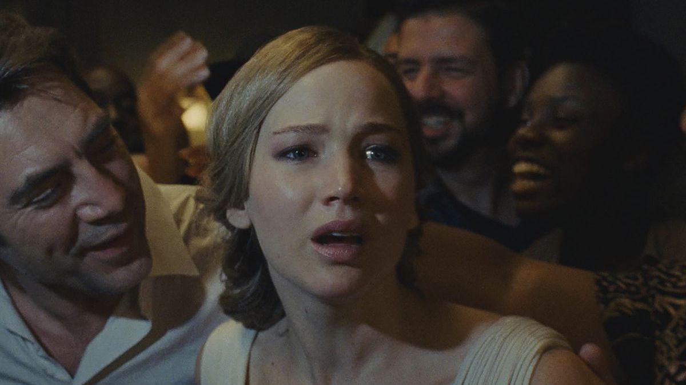

التطور

Mother! (2017)
هناك شئ غامض ما, وباء يسري فى الناس يغيرهم ولا يشعرون به.
لماذا يضحك هذا على كل شئ؟, ولماذا يتحدث هذا مع نفسه فى الطريق؟.
هل سأصبح مثلهم؟. يجب أن أعرف كل شئ.
ملحوظة: هذا المقال ليس عن علوم الحاسب أو أى نوع من أنواع السيليكون.
كانت حياتى فى الإبتدائية والإعدادية نعيم لم أذقه بعدها قط. كنت من الطلبة المتفوقين بدون جهد منى
وكنت أعتقد أن المدرسين يحبوننى لذلك أكثر ممن يحصلون على درجات أعلى منى.
فلم أكن هذا الطالب الذى يحفظ درس اللغة العربية ويصبح الأول بطريقة مملة, ولكنى كنت فقط أستمتع بالأمر.
ولم أكن أهتم أن أكون الأول فى الترتيب, فقد كنت دائما الثالث أو الرابع بدون جهد, فلماذا أضيف إلى حياتى الكثير من الدراما لأتقدم فى الترتيب, ما معنى أن أكون الأول على أي حال؟.
فإن ذهبت المتعة فلا فائدة لكل ذلك عندى.
أذكر مرة أن مدرس اللغة العربية كان يقوم بكتابة نص ما على السبوره ثم يمر على الفصل طالب طالب ويعرب كلمة كلمة حتى يعرب النص كله.
وكانت عادتى ألا أنتظر هذة الأدوار وأقوم أنا فى ذهنى بإعراب الجملة كلها. فلماذا أفوت متعة ذلك مقابل متعة إعراب كلمة واحدة؟
وإذا بى فى مرة أجد شئ ممتعاً جداً فى النص, وهو أن خبر أول مبتدأ فى النص كان فى نهايته. فصحت فيه "بوص يا مستر خبر المبتدأ ده فين"
فقام بالنظر إلى النص وتابع حتى وجد الخبر. ولا أنسى تعابير وجه ورده فعله حينها. فلهذه الأشياء كنت أظن أن لى مكانة خاصة عند المدرسيين دون غيرى وكان لذلك مكانة كبيرة فى قلبى (حسنا ليست كبيرة جداً, فكان بعضهم لا يصلح أن يكون مدرساً حتى).
عموماً كنت أشعر أننى نجم من نجوم المدرسة, رحلات مجانية ومسابقات للمتفوقين خارج المدرسة ومكانة خاصة عند المدرسين.
ولم أكن أعى طوفان الصدمات الذى على وشك أن يحدث لى.
كنت ولازلت أعيش فى منطقة شعبية, وكنت أرى وضاعة المجتمع من حولى كل يوم. لكن لسبب ساذج ما ظننت أننى محمى من ذلك وأنه لن تدخل هذة الوضاعه إلى المؤسسات التعليمية, وهذا ما كان يهمنى.
فإن كانت المؤسسات التعليمية محمية هى ومن فيها, فليحترق المجتمع بأكمله.
وبدأ عالمى بالإنهيار عندما ذهبت إلى الثانوية.
أتذكر أننى ذهبت أول يوم أرتدى الزى المدرسى من أفخر ما وجدت من ملابس مناسبة, نشيط ومتفأل ومستعد لمتعة على مستوى أعلى.
كانت المدرسة من المدارس الحكومية, ولكنها كانت تعتبر من مدارس المتفوقين, فلا أحد يستطيع دخولها إلا بمجموع عالى (أو هذا ما ظننته وقتها على أي حال, ولم أكن أعلم إن كله بالحب بيمشى).
كانت المدرسة بائسة تماماً كعادة أى مؤسسة حكومية, والمدرسون فيها يتصرفون وكأنهم يقضون فترة عقوبة لجريمة إرتكبوها سابقاً, وليس كأشخاص يتمتعون بالعلم.
بيئة كئيبة ليس بها معنى ولا هدف, والطلاب المحترمون فيها هم الحشاشون.
كان الحشيش شئ معروف لى بطبيعة المنطقة التى أعيش فيها, فهو منتشر بدرجة لا تجعل حتى فى تدخينه أى إحساس بكسر القوانين أو المألوف.
وكنت لا أبه له على الإطلاق, فهو من سيم المجتمع الوضيع الذى أعرفه جيداً. ولكن ما صدمنى (الأولى) أكثر أن أجده داخل المؤسسة التعليمية وأن أجد أن المدرسيين ربما يعاملون مدخنيه بتقدير أكثر من غيرهم.
فأن يكون المحشش هو النجم داخل أسوار المدرسة, هى من أكبر صدمات حياتى.
وليست المعضلة هنا "من النجم", ولكن بأن هذا ينطلى على فساد عميق فى المجتمع لدرجة تجعلك تتسأل هل وعيت أى شئ صحيح عن المجتمع من قبل, أم أن كل ما أعرفه ليس له معنى؟
وتأتى الصدمة فتفرض تغيير عاجل على طريقة نظرتك للعالم , وتضعك فى حالة جمود, لا تعرف حينها كيف تتصرف, أو أن التصرف فى حد ذاته سيكون له أى فائدة.
وتعرفت حينها على حالة تجميد الوعى التى رافقتها حتى الأن كطريقة للتعامل مع الصدمات. فليس هناك وعى أصلاً ليصتدم.
أو كأن الوعي قام بالتخلى عنى والذهاب بعيداً بعد أن قال "لا أستطيع التعامل مع ذلك, فتعامل معه بمفردك".
قضيت هذة الثلاث سنوات فى قرف تام من الدنيا, ودائما أكون نائم فى الفصل, حتى أن بعض المدرسيين كان إذا دخلوا الفصل وقبل أن ينظروا ناحيتى حتى يصيحون "مروان, إصحى".
حسنا, هذة هى المؤسسة التعليمية الصغيرة الفاسدة, ولكن لا يمكن أن يكون ذلك هو حال الجامعة أيضاً, أليس كذلك؟.
فالجامعة هى متعة العلم الحقيقية التى أنتظرتها طوال حياتى.
لم يكن ذلك هو حال الجامعة بالضبط فى تجربتى, ولكن كانت الصدمة مختلفة بعض الشئ.
وكأن الدنيا تقول لى "أعتقد أنك ربما تمل من تشابة الصدمات, حسنا سأقوم بتنويعها لك".
كنت أنتظر أن أرى أساتذة الجامعة العلماء الذين كنت أحلم أن أكون مثلهم وأن أغرق فى بحر من العلم والمتعة.
لكن عند حضور المحاضرات لبضعة أيام أدركت أننى كنت واهم هنا أيضاً (الثانية).
عدد كبير من الطلاب فى المدرج بشكل لا يشعر فيه الطالب بأى إتصال مع الأستاذ, أساتذة يلقون المعلومات كالصخر بدون إدراك مدى تناسب ما يلقون مع معرفة الطالب,
دراسة بلغة مختلفة لأول مرة, وسط كئيب وبدون روح, معاداة من الأساتذة للطلبة بدون سبب, ومناهج لا تعرف ما فائدتها ولماذا تدرسها أصلا,
وليس هناك أى تصور عن نفع ما تدرسه فى حياتك بعد الجامعة (إن كان هناك نفع أصلا).
أو بطريقة أخرى, مجرد مشهد بدون معنى مطالب الحاكم بإخراجه, وقامت الدنيا بتلقين الأهالى بالإشتراك فيه بدون الإنتباه لعوائده.
عند هذة النقطة كنت قد فقدت كل طاقة لدى للتعامل مع الواقع, وشعرت أن طريق حياتى مسدوداً تماماً, والإدراك الجمعى حولك يقول
"الطريق مسدود, فهيا نرقص".
قمت بإعادة السنة الأولى فى الجامعة لمرة ورسبت أيضا فى هذة المرة, ممى أدى لفصلى من الجامعة (الثالثة).
فأى نظام تعليميى هذا الذى يوصل شخص بهذا الحب للعلم لهذا الموقف. أنا تقومون بفصلى أيها الميتون.
ما هذا؟ ما هذة الجامعة؟ ما هذا النظام؟ ما هذة البلد؟ ما هذا العالم؟ لماذا خلقنا على أي حال؟ وماذا نفعل هنا؟ هل هناك إله حقاً؟.
كان من تدبير الله وقتها أنه كان فى إستطاعه أهلى أن أنتقل إلى جامعة خاصة بقسم علوم الحاسب. ولن أتحدث عن السذاجة التى ظننت بها حينها أن هذة الجامعة ستكون مختلفة عن سابقتها وأن ............................. حسنا, فأنت تعرف الباقى.
قمت كأى شاب بعد إنتهاء الجامعة بالتقدم لأداء الخدمة العسكرية, وكالعادة بسذاجة ما ظننت أننى سأنجو من ذلك.
قامت الخدمة العسكرية بإمتياز بمسح أى إدراك لى للحياة (الرابعة), فلا أعرف لماذا أعيش أو كيف أعيش, ولا أجد متعة فى العيش حتى.
فالإنسان العادى يكون راغباً فى الدنيا ولو لبعض الشئ, ولا يحب الموت ولا يحب مثلا دخول النار ويتمنى دخول الجنة وما إلى ذلك. ولكن الحياة داخل الوحدة العسكرية تجعلك ترحب بالموت
رغبة فى إنهاء هذا العيش الذى فقد كل معانيه, وتسحب منك أى إدراك لمعنى الجنة والنار أو المستقبل عموما.
فأنت خارج إختبار الدنيا وربما تكون محسوباً عند الله كغير العاقل.
الحياة داخل الخدمة العسكرية هى الطاحون الأكبر الذى إذا إفترضنا أن المجتمع يقوم ببناء الشخص طوال حياته قبلها, تقوم هى بتدمير كل ذلك بإمتياز خلالها, وتخرجه للمجتمع مرة أخرى فى صورة كفن متحرك.
فأن يتم معاملتك كجماد, وأن تأكل أكل مشوه, وتنام وسط الحشرات, ولا تأمن على ملابسك حتى, وأن تقوم بخدمة شخص أخر كالعبد, وتخاف على مستقبلك ممن لا قيمة له, وتقوم بحراسة شئ لا يوجد أى معنى لحراسته,
وأن تخاف وتُمنع من إبداء رأيك أو حتى إظهار شخصيتك, كل ذلك لمدة سنة أو أكثر يقوم بتدميرك تماماً وتحويلك لشئ مشوه لا تستطيع أنت حتى التعرف عليه.
وعرفت بعدها أن هذا شئ فى طبيعة الحياة العسكرية نفسها, وليس شئ مميزاً فى مصر. حتى ضباط الجيش ضحايا
لهذا.
فهذة قصة واحد من ضمن ملايين عاشوا نفس القصة وربما أسوء, ولا يفكر أحد فى تغيير ذلك لمن سيأتون بعدنا, ولا نعرف حتى كيف نوفر لهم مسار أخر, ولا نعرف كيف نستكمل العيش الأن.
وهكذا علمت الشئ الغامض الذى يسرق الحياة من أرواح الناس. وهو ما راقبت تطوره فى كل من حولى خلال حياتى.
أتذكر صاحب المركز الأول الذى كان يحفظ دروس اللغة العربية,
أنظر إليه الأن وهو يلعن الدنيا بعد أن جاهد لسنوات فى كلية الصيدلة, ووجد نفسة بعدها فى دوامة الدنيا كمن لم يتعلم حتى.
وذلك الذى قضى الجامعة فى ثمانية سنين, وذلك الذى أجبره نظام التعليم الفاشل على إداره ظهره للتعليم بالكامل. ومنهم من تغير تماماً ولا يدرك حتى ذلك.
بل تخيل من لم يدخلهم أهلهم إلى التعليم حتى, فربما هناك بعض الرحمة لمن لم يجد إلا الحشيش كطريقة للهروب من الواقع.
هكذا يختفى كل معنى من أمامك لتصبح تائهاً تماماً فى هذا العالم, هكذا يتحول الطفل السعيد لمن يتحدث مع نفسه فى الطريق.
وماذا فعلنا نحن الكبار بعد أن عرفنا بذلك؟ وماذا فعل من قبلنا؟
فنحن نلقى بالطفل فى ذلك المستنقع ونطلب منه أن يكون متديناً وناجحاً ويعرف كيف يواجه المجتمع, بدون تجهيزه بأى طريقة لمواجهة كل هذة الصدمات.
فمهلاً على أنفسنا وعلى من حولنا. فكلنا تطورنا لنكون مجانين.